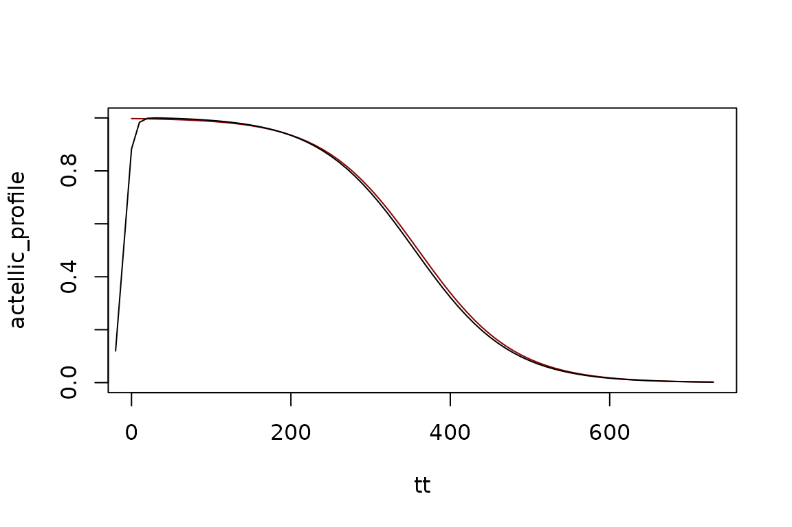
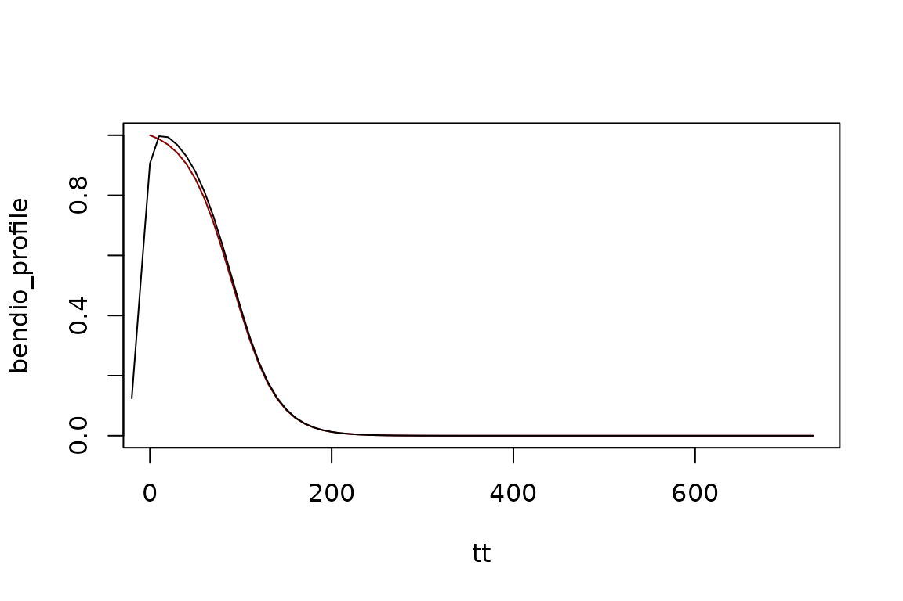

IRS - Insecticides
Durability of IRS Effects by Insecticide Class
IRS-insectides.Rmd
library(ramp.control)## Loading required package: ramp.xdsInsecticides
Information about waning potency is available from the manufacturers of insecticides, so we have developed functions with preset differences that reflect these differences.
Pyrethroid
pyrethroid_profile <- make_profile(tt, 0, -.3, -6)
pyrethroid_profile <- pyrethroid_profile/max(pyrethroid_profile)
plot(tt, pyrethroid_profile, type="l", col = "darkred")
pyrethroid <- make_irs_round("pyrethroid", -10, 1)
Fa <- make_function(pyrethroid)
lines(tt1, Fa(tt1), type = "l", main="Coverage", ylab = "A Sharkfin Function", xlab = "Time")
Actellic
actellic_profile <- make_profile(tt, 0, -.5, -12)
plot(tt, actellic_profile, type="l", col = "darkred")
actellic <- make_irs_round("actellic", -10, 1)
Fa <- make_function(actellic)
lines(tt1, Fa(tt1), type = "l", main="Coverage", ylab = "A Sharkfin Function", xlab = "Time")
Bendiocarb
bendio_profile <- make_profile(tt, 0, -1.2, -3)
bendio_profile <- bendio_profile/max(bendio_profile)
plot(tt, bendio_profile, type="l", col = "darkred")
bendiocarb <- make_irs_round("bendiocarb", -10, 1)
Fb <- make_function(bendiocarb)
lines(tt1, Fb(tt1), type = "l", main="Coverage", ylab = "A Sharkfin Function", xlab = "Time")
Fludora Fusion
ff_profile <- make_profile(tt, 0, -0.9, -10)
plot(tt, ff_profile, type="l", col= "darkred")
fludora_fusion <- make_irs_round("fludora_fusion", -10, 1)
Fff <- make_function(fludora_fusion)
lines(tt1, Fff(tt1), type = "l", main="Coverage", ylab = "A Sharkfin Function", xlab = "Time")
Sumishield
clothianidin_profile <- make_profile(tt, 0, -.4, -12)
clothianidin_profile <- clothianidin_profile/max(clothianidin_profile)
plot(tt, clothianidin_profile, type="l", col = "darkred")
sumishield <- make_irs_round("sumishield", -10, 1)
Fs <- make_function(sumishield)
lines(tt1, Fs(tt1), type = "l", main="Coverage", ylab = "A Sharkfin Function", xlab = "Time")